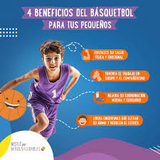

Basket Kids
Basket Kids es un proyecto deportivo enfocado en promover la práctica del baloncesto en niños y niñas, brindándoles un espacio seguro para aprender, divertirse y desarrollar habilidades deportivas.
A continuación vemos tres puntos importantes:
Salud Física
El baloncesto mejora la condición física, fortalece músculos y ayuda a mantener hábitos saludables.

Trabajo en Equipo
Los niños aprenden a convivir, compartir y trabajar juntos para alcanzar objetivos.

Disciplina
El deporte enseña responsabilidad, constancia y superación personal.

¿Cómo se juega al baloncesto?
Proyecto Basket Kids
Los entrenamientos comenzaron de forma gratuita con el objetivo de apoyar a la niñez y fomentar valores como el respeto, la disciplina, la responsabilidad y el trabajo en equipo.


Objetivo principal del proyecto
El objetivo principal del proyecto es crear oportunidades para que los niños puedan desarrollarse mediante el deporte, fomentando valores como el respeto, la amistad, la disciplina y el trabajo en equipo.
A través de actividades dinámicas y recreativas, Basket Kids busca motivar a los niños a practicar deporte y alejarse de ambientes negativos.


Entrena con nosotros